专题02 数轴上动点问题的四种考法

考点01 动点运动时间问题
考点02 数轴折叠问题
考点03 线段定值问题
考点04 新定义问题

考点01  动点运动时间问题
动点运动时间问题
1．如图：在数轴上，点A对应的数是 ，点B对应的数是16，两动点M、N同时从原点O出发，点M以每秒1个单位的速度沿数轴向点B运动；点N以每秒3个单位的速度沿数轴向左运动，到达点A后停留1秒，再从点A沿数轴向右到达点B后停止运动．设点M的运动时间为
，点B对应的数是16，两动点M、N同时从原点O出发，点M以每秒1个单位的速度沿数轴向点B运动；点N以每秒3个单位的速度沿数轴向左运动，到达点A后停留1秒，再从点A沿数轴向右到达点B后停止运动．设点M的运动时间为 秒．
秒．

(1)当 时，线段
时，线段 的长为________（直接填空）；当
的长为________（直接填空）；当 时，线段的长为________（直接填空）；
时，线段的长为________（直接填空）；
(2)在运动过程中，当点M与点N重合时，求t的值；
(3)当线段的长为7时，直接写出t的值．
2．已知点M、N在数轴上分别表示有理数m、n，M、N两点之间的距离表示为，则在数轴上M、N两点之间的距离 ，如图1，A、B两点在数轴上对应的数分别为
，如图1，A、B两点在数轴上对应的数分别为 和6．
和6．
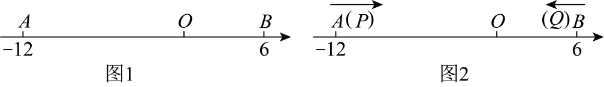
(1)直接写出A、B两点之间的距离______；
(2)若在数轴上存在一点C，使得C到B的距离是到A的距离的2倍，求点C表示的数；
(3)如图2，现有动点P、Q，若点P从点A出发，以每秒4个单位长度的速度沿数轴在 之间进行往返运动，点P出发的同时点Q从点B出发，以每秒3个单位长度的速度沿数轴一直向左运动，求当
之间进行往返运动，点P出发的同时点Q从点B出发，以每秒3个单位长度的速度沿数轴一直向左运动，求当 时，时间t的取值．
时，时间t的取值．
3．在数轴上有理数 对应的点为点
对应的点为点 ，有理数
，有理数 对应的点为点
对应的点为点 ，，两点之间的距离表示为
，，两点之间的距离表示为 ，记为
，记为 ．
．

(1)如图，点在数轴上所对应的数为 ，
，
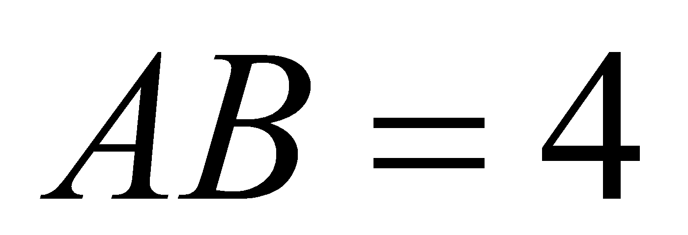
，则点对应的数为________．(2)在（1）的条件下，若点在的右侧，同时点以每秒2个单位长度的速度沿数轴向左运动，点以每秒1个单位长度的速度沿数轴向右运动，当点运动到 所在的点时，求，两点间的距离．
所在的点时，求，两点间的距离．
(3)在（2）的条件下，若点运动到后静止不动，点以每秒1个单位长度的速度沿数轴向左运动，求经过多长时间， ．
．
4．如图，已知数轴的单位长度为1， 的长度为1个单位长度．
的长度为1个单位长度．

(1)如果点A，B表示的数是互为相反数，求点C表示的数．
(2)若点A为原点，在数轴上有一点F，当 时，求点F表示的数．
时，求点F表示的数．
(3)如果点B，E表示的数的绝对值相等，动点P从点B出发沿数轴正方向运动，速度是每秒3个单位长度，动点Q同时从点C出发也沿数轴正方向运动，速度是每秒2个单位长度，求运动几秒后，点P可以追上点Q？
5．如图，数轴上的单位长度为1，
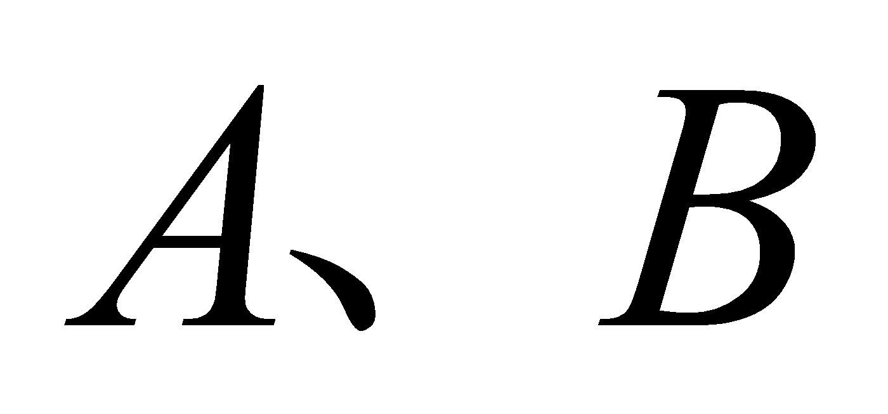
两点表示的数是互为相反数；
(1)点表示的数是______，点表示的数______．
(2)数轴上一个动点 先向左移动2个单位长度，再向右移动5个单位到达点
先向左移动2个单位长度，再向右移动5个单位到达点 ，若点表示的数是1，则点所表示的数是______．
，若点表示的数是1，则点所表示的数是______．
(3)在数轴上，点 为坐标原点，若点
为坐标原点，若点
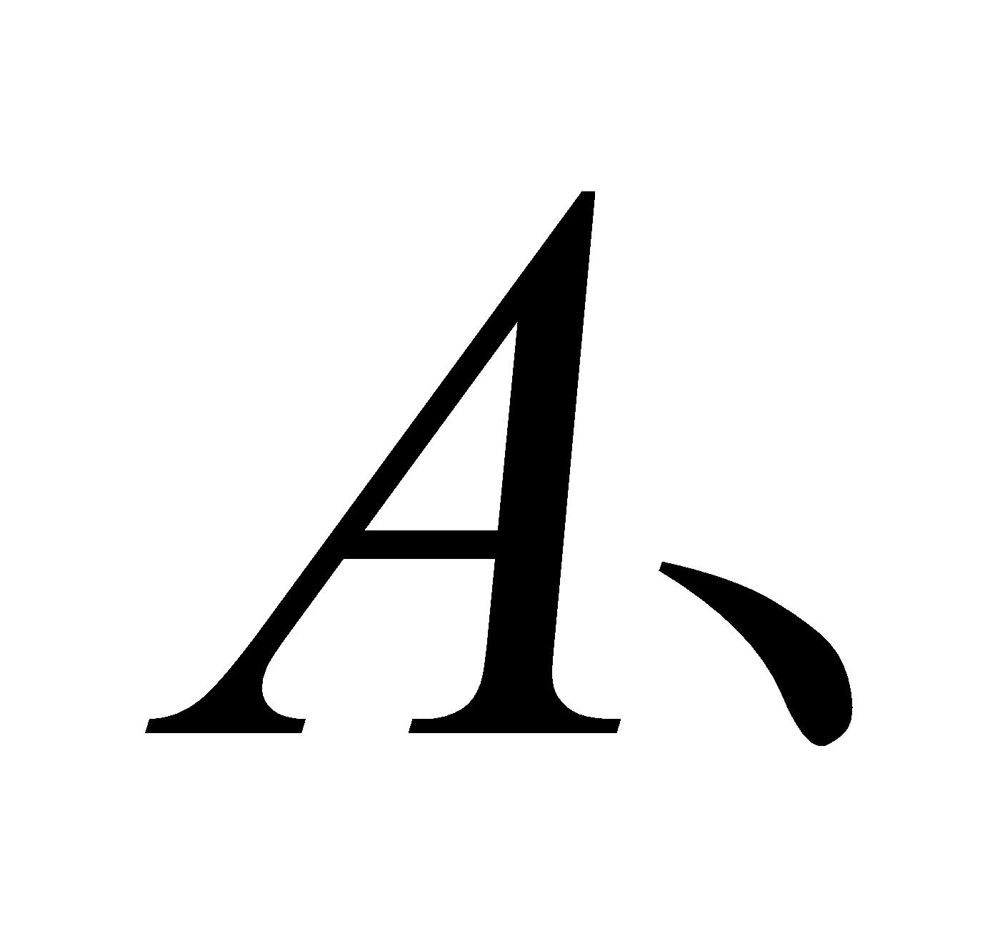
点分别以2个单位长度/秒和0.5个单位长度/秒的速度向右运动，当两点同时运动时，设运动时间为 秒
秒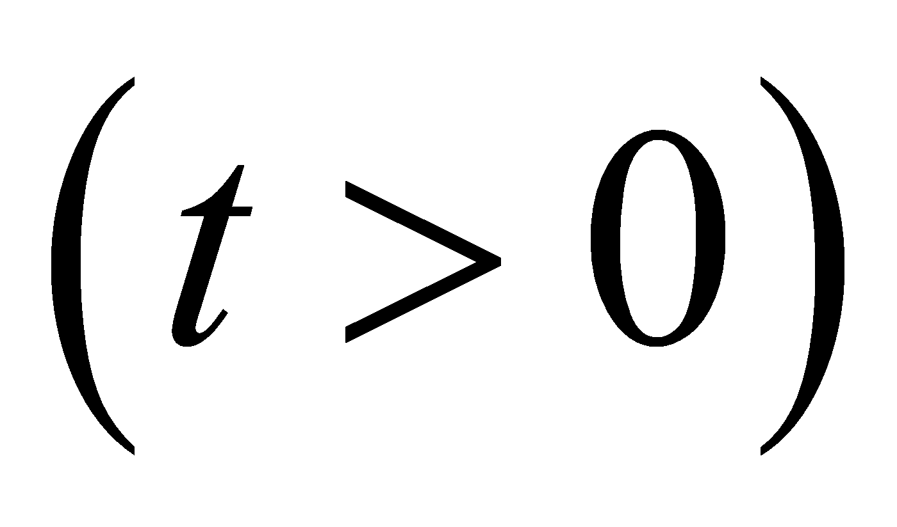
．①点表示的数为______；点表示的数为______．（用含的式子表示）
②当为何值时，点点 点三点之间恰好有一个点到其他两个点的距离相等？
点三点之间恰好有一个点到其他两个点的距离相等？
6．已知在数轴上，一动点 从原点出发，沿着数轴以每秒
从原点出发，沿着数轴以每秒 个单位长度的速度来回移动，第
个单位长度的速度来回移动，第 次移动是向右移动个单位长度，第
次移动是向右移动个单位长度，第 次移动是向左移动个单位长度，第
次移动是向左移动个单位长度，第 次移动是向右移动个单位长度，第次移动是向左移动个单位长度，第
次移动是向右移动个单位长度，第次移动是向左移动个单位长度，第 次移动是向右移动个单位长度，…….
次移动是向右移动个单位长度，…….
(1)求出 秒钟后动点所在的位置；
秒钟后动点所在的位置；
(2)第 次移动后，点在表示数______的位置上，运动时间为______
次移动后，点在表示数______的位置上，运动时间为______ ；
；
(3)第 次移动后，点运动时间为______
次移动后，点运动时间为______ ，当为奇数时，点在表示数______的位置上；当为偶数时，点在表示数______的位置上；
，当为奇数时，点在表示数______的位置上；当为偶数时，点在表示数______的位置上；
(4)如果在数轴上有一个定点，且与原点相距 个单位长度，问：动点从原点出发，可能与重合，若能，则第一次与点重合需要多长时间？若不能，请说明理由．
个单位长度，问：动点从原点出发，可能与重合，若能，则第一次与点重合需要多长时间？若不能，请说明理由．
考点02 数轴折叠问题
7．【定义】已知点 是线段上的一个分点，若点到线段两个端点的距离之比为
是线段上的一个分点，若点到线段两个端点的距离之比为 时，则称点为线段的“理想点”．如图，、分别为数轴上的两点，点对应的数为
时，则称点为线段的“理想点”．如图，、分别为数轴上的两点，点对应的数为 ，点对应的数为100．
，点对应的数为100．
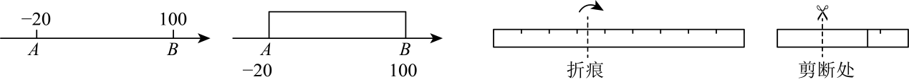
(1)求点A、B之间的距离；
(2)求线段的“理想点”所对应的数；
(3)现将一纸条如图放置，再沿纸条上的某处折叠，然后在重叠部分某处剪一刀得到三条纸条，若这三条纸条的长度之比为 ，然后把纸条复原，请计算说明折痕处对应的点在数轴上所表示的数是多少？
，然后把纸条复原，请计算说明折痕处对应的点在数轴上所表示的数是多少？
8．点、、在数轴上的位置如图所示．

(1)点B表示的数是______，点C表示的数是______；
(2)折叠数轴，使数轴上的点B和点C重合，则点与表示数______的点重合；
(3)有理数 、在数轴上对应点之间的距离可表示为
、在数轴上对应点之间的距离可表示为
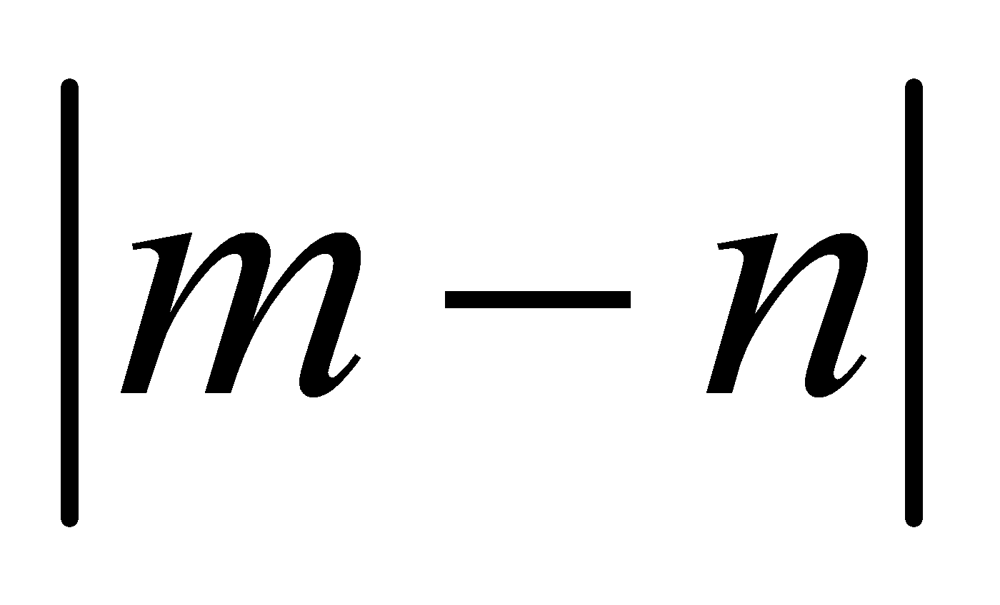
，如5与2在数轴上所对应的点之间的距离为 ．
．①求 的最小值；
的最小值；
②若、 两点之间的距离为2024（点在点的左侧），将数轴折叠，使得1对应的点与对应的点重合，此时、两点也重合，求、两点分别表示的数；
两点之间的距离为2024（点在点的左侧），将数轴折叠，使得1对应的点与对应的点重合，此时、两点也重合，求、两点分别表示的数；
9．综合与探究：数轴是一个非常重要的数学工具，它使数和数轴上的点建立起一一对应的关系，揭示了数与点之间的内在联系，它是“数形结合”的基础．小明在一条长方形纸带上画了一条数轴，进行如下操作探究：

(1)操作1：折叠纸带，使数轴上表示1的点与表示 的点重合，则表示
的点重合，则表示 的点与表示数______的点重合；
的点与表示数______的点重合；
(2)操作2：折叠纸带，使数轴上表示1的点与表示3的点重合，则数轴上表示 的点与表示数______的点重合，表示数的点与表示数______的点重合（用含的代数式表示）；
的点与表示数______的点重合，表示数的点与表示数______的点重合（用含的代数式表示）；
(3)操作3：在数轴上剪下6个单位长度（从到5）的一段纸带（如图①），将纸带按图②所示向左折叠，剪掉不重叠部分，不重叠部分的纸带长度为个单位长度，将重叠部分按图③所标注的剪切处剪切，得到三条长度相等的纸带，请直接写出图③剪切处对应的点所表示的数（用含的代数式表示）．
10．平移和翻折是初中数学两种重要的图形变化．请思考下列问题：
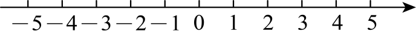
(1)平移运动
①把笔尖放在数轴的原点处，先向负方向移动3个单位长度，再向正方向移动2个单位长度，这时笔尖的位置表示的数为 ．
A．
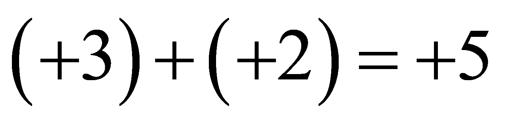
C．
B．
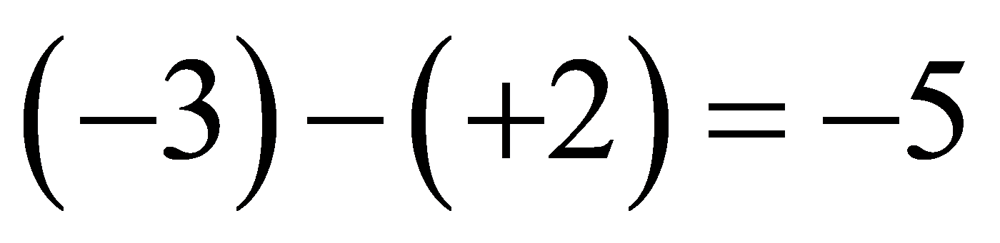
D．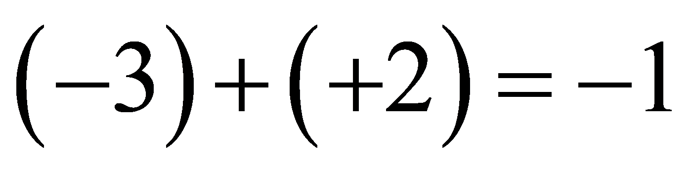
②一机器人从原点O开始，第1次向左跳1个单位，紧接着第2次向右跳2个单位，第3次向左跳3个单位，第4次向右跳4个单位，…，依此规律跳，当它跳2023次时，落在数轴上的点表示的数是 ．
(2)翻折变换
①若折叠纸条，表示的点与表示3的点重合，则表示
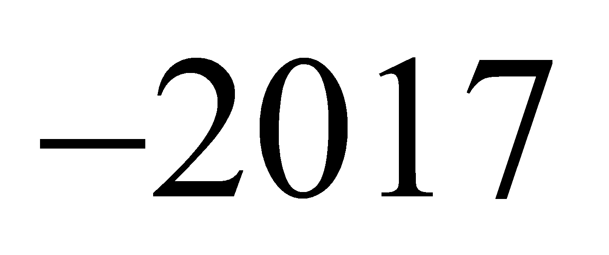
的点与表示 的点重合；②若数轴上A、B两点之间的距离为2018（A在B的左侧，且折痕与①折痕相同），且A、B两点经折叠后重合，则A点表示 ，B点表示 ．
③若数轴上折叠后重合的两点分别表示数a，b，则折叠中间点表示的数为 （用含有a，b的式子表示）
考点03 线段数量定值问题
11．在数轴上点A在原点的左侧，点C在原点的右侧，点A距离原点2个单位长度，点C距离原点7个单位长度，点B表示的数是最小的正整数，
(1)点A、B、C表示的数分别是：________，________，________；
(2)点A与点B之间的距离为________，点A与点C之间的距离为________，点B与点C之间的距离为________；
(3)点A、B、C开始在数轴上运动，若点A以每秒1个单位长度的速度向左运动，同时，点B和点C分别以每秒2个单位长度和4个单位长度的速度向右运动，t秒钟过后，用含t的代数式分别表示点A与点B之间的距离，点A与点C之间的距离以及点B与点C之间的距离；
(4)在（3）的条件下，若点B与点C之间的距离用BC表示，点A与点B之间的距离用AB表示，则 的值是否随着时间t的变化而改变？若改变，请说明理由：若不变，请求其值．
的值是否随着时间t的变化而改变？若改变，请说明理由：若不变，请求其值．
12．如图，已知点，，是数轴上三点，为原点．点表示的数为3，点与点之间的距离为2，点与点之间的距离为6．
【问题提出】
（1）点表示的数是________，点表示的数是________；
【问题探究】
（2）动点，分别同时从点，处出发，分别以每秒8个单位长度和4个单位长度的速度沿数轴正方向运动，点在点和点之间，且点到点的距离与点到点的距离相等，点在点和点之间，且点到点之间的距离是点到点之间距离的4倍，当运动时间为 时，用含的代数式表示点，对应的数；
时，用含的代数式表示点，对应的数；
【问题解决】
（3）在（2）的条件下，点到点之间的距离是否与的大小有关？若有关，用含的代数式表示点到点之间的距离；若无关，请求出点到点之间的距离．

13.如图，在数轴上点表示数，点示数，点表示数 ，的相反数是，且、满足
，的相反数是，且、满足 ．
．

(1) ________；
________； ________；
________； ________；
________；
(2)若将数轴折叠，使得点与点重合，则点与数________表示的点重合；若数轴上有一点 为线段
为线段 的三等分点（点在线段内），则点表示的数是________；
的三等分点（点在线段内），则点表示的数是________；
(3)点、、开始在数轴上运动，若点以每秒个单位长度的速度向左运动，同时，点和点分别以每秒个单位长度和个单位长度的速度向右运动，假设秒钟过后，若点与点之间的距离表示为，点与点之间的距离表示为 ，是否存在常数
，是否存在常数 ，使
，使 为定值，若存在，求的值；若不存在，请说明理由．
为定值，若存在，求的值；若不存在，请说明理由．
14．【背景知识】数轴是初中数学的一个重要工具，利用数轴可以将数与形完美地结合．研究数轴我们发现了许多重要的规律：若数轴上点，点表示的数分别为 ，则
，则 两点之间的距离
两点之间的距离 ，线段的中点表示的数为
，线段的中点表示的数为 ．
．
【问题情境】数轴上点表示的数为 ，点表示的数为6，点从点出发，以每秒1个单位长度的速度沿数轴向终点匀速运动，同时点从点出发，以每秒2个单位长度的速度向左匀速运动，到达点后，再立即以同样的速度返回点，当点到达终点后，
，点表示的数为6，点从点出发，以每秒1个单位长度的速度沿数轴向终点匀速运动，同时点从点出发，以每秒2个单位长度的速度向左匀速运动，到达点后，再立即以同样的速度返回点，当点到达终点后，
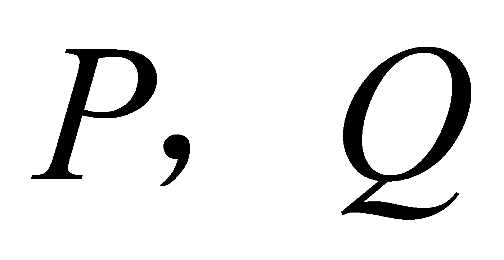
两点都停止运动，设运动时间为秒 ．
．【综合运用】

(1)填空：两点间的距离 ________，线段的中点表示的数为________；
________，线段的中点表示的数为________；
(2)当为何值时，两点间距离为3；
(3)若点为 的中点，点为
的中点，点为 的中点，当点到达点之前，在运动过程中，探索线段和
的中点，当点到达点之前，在运动过程中，探索线段和 的数量关系，并说明理由．
的数量关系，并说明理由．
15．阅读下面的材料：
如图1，在数轴上A点所示的数为a，B点表示的数为b，则点A到点B的距离记为，线段的长可以用右边的数减去左边的数表示，即 ．
．
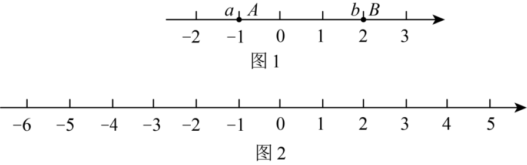
请用上面的知识解答下面的问题：
如图2，一个点从数轴上的原点开始，先向左移动 到达A点，再向左移动
到达A点，再向左移动 到达B点，然后向右移动
到达B点，然后向右移动 到达C点，用1个单位长度表示
到达C点，用1个单位长度表示 ．
．
(1)请你在数轴上表示出A，B，C三点的位置：
(2)点C到点A的距离 ______
______ ；若数轴上有一点D，且
；若数轴上有一点D，且 ，则点D表示的数为_________；
，则点D表示的数为_________；
(3)若将点A向右移动 ，则移动后的点表示的数为_____；（用代数式表示）
，则移动后的点表示的数为_____；（用代数式表示）
(4)若点B以每秒的速度向左移动，同时A．C点分别以每秒、 的速度向右移动，设移动时间为t秒，试探索：
的速度向右移动，设移动时间为t秒，试探索： 的值是否会随着t的变化而改变？请说明理由．
的值是否会随着t的变化而改变？请说明理由．
16．我国著名数学家华罗庚说过“数缺形时少直观，形少数时难入微”，数形结合是解决数学问题的重要思想方法．例如，代数式 的几何意义是数轴上x所对应的点与2所对应的点之间的距离，因为
的几何意义是数轴上x所对应的点与2所对应的点之间的距离，因为
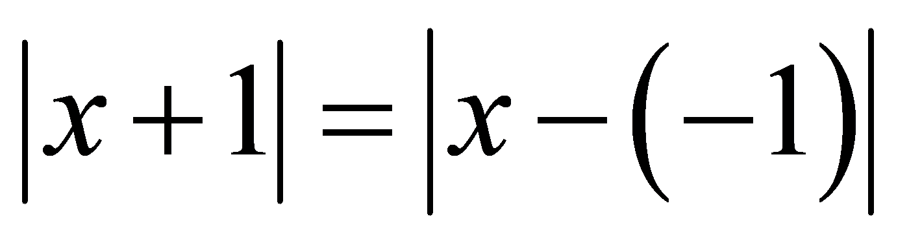
，所以 的几何意义就是数轴上x所对应的点与所对应的点之间的距离．
的几何意义就是数轴上x所对应的点与所对应的点之间的距离．回答下列问题：
(1)①数轴上表示x和2的两点A和B之间的距离是______；
②在①的情况下，如果 ，那么x为______．
，那么x为______．
(2)探究问题：代数式 的最小值是多少？
的最小值是多少？
如图，点A、B、P分别表示数、2、x，，
∵的几何意义是线段 与
与 的长度之和，
的长度之和，
∴当点P在线段上时， ，当点P在点A的左侧或点B的右侧时，
，当点P在点A的左侧或点B的右侧时，
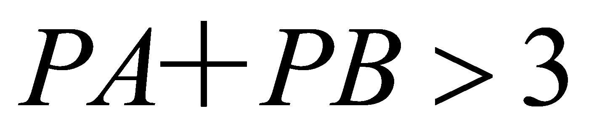
，∴的最小值是3，
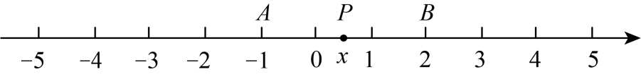
请你根据上述自学材料，探究解决下列问题：
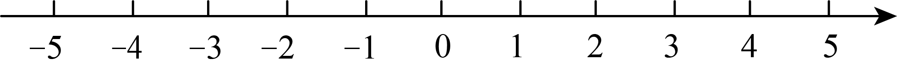
解决问题：
①直接写出式子 的最小值是______；
的最小值是______；
②工厂加工车间工作流水线上依次间隔2米排着5个工作台A、B、C、D、E，一只配件箱应该放在工作 处，能使工作台上的工作人员取配件所走的路程最短，最短路程是______米．
(3)若点A、B、C在数轴上分别表示数、1、5，点A、B、C同时开始在数轴上运动，若点A以每秒1个单位长度的速度向左运动，同时，点B和点C分别以每秒1个单位长度和3个单位长度的速度向右运动，假设t秒钟过后，若点B与点C之间的距离表示为，点A与点B之间的距离表示为．请问： 的值是否随着时间t的变化而改变？若变化，请说明理由；若不变，请求其值．
的值是否随着时间t的变化而改变？若变化，请说明理由；若不变，请求其值．
17．已知数轴上A，B，C三点对应的数分别为、3、5，点P为数轴上任意一点，其对应的数为x．点A与点P之间的距离表示为，点B与点P之间的距离表示为．
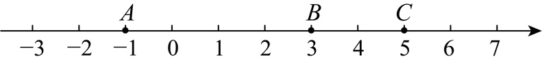
(1)若 ，求x的值；
，求x的值；
(2)若 ，求x的值；
，求x的值；
(3)若点P从点C出发，以每秒3个单位的速度向右运动，点A以每秒1个单位的速度向左运动，点B以每秒2个单位的速度向右运动，三点同时出发．设运动时间为t秒，试判断： 的值是否发生变化？若不变化，求出这个定值，若变化，请说明理由．
的值是否发生变化？若不变化，求出这个定值，若变化，请说明理由．
18．对数轴上的点进行如下操作：先把点表示的数乘以3，再把所得数对应的点向左平移1个单位，得到点的对应点
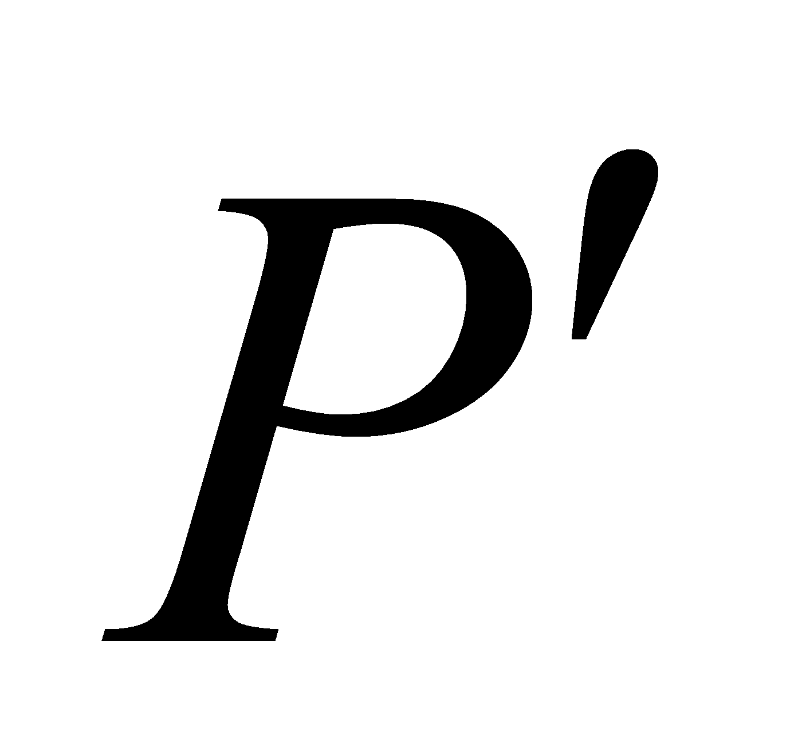
．例如，点表示的数为3，则点表示的数为8．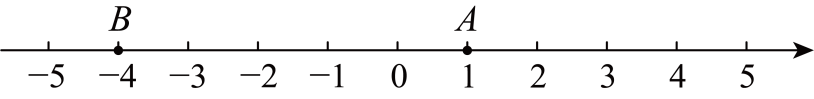
(1)点，在数轴上，对线段上的每个点进行上述操作后得到线段 ，其中点，的对应点分别为
，其中点，的对应点分别为 ，
，
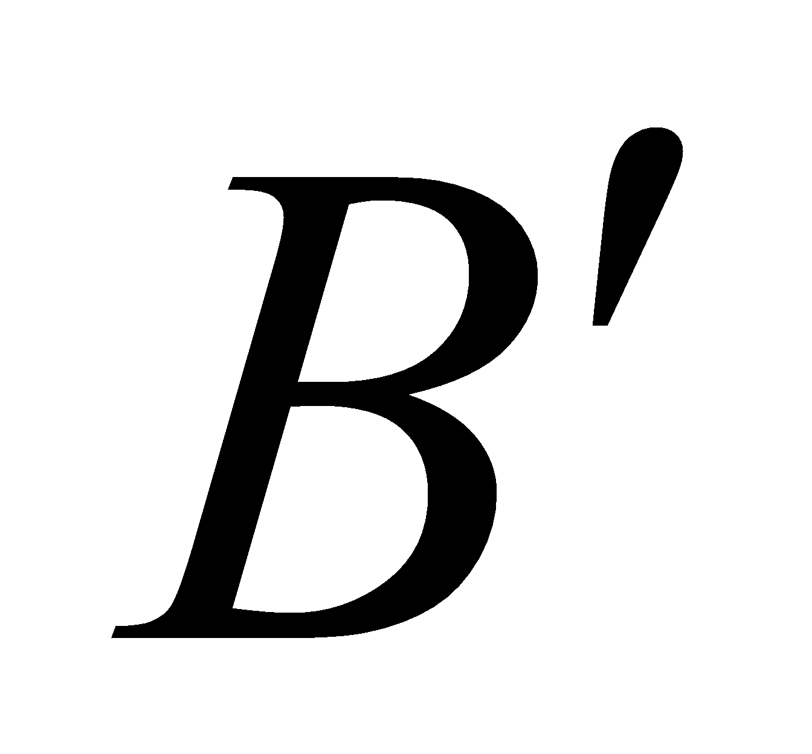
．如图，若点表示的数是1，若点表示的数是，则点表示的数是 ；点表示的数是 ；(2)在数轴上点表示的数为3，且 ，对线段
，对线段 上的每个点进行上述操作后得到线段
上的每个点进行上述操作后得到线段
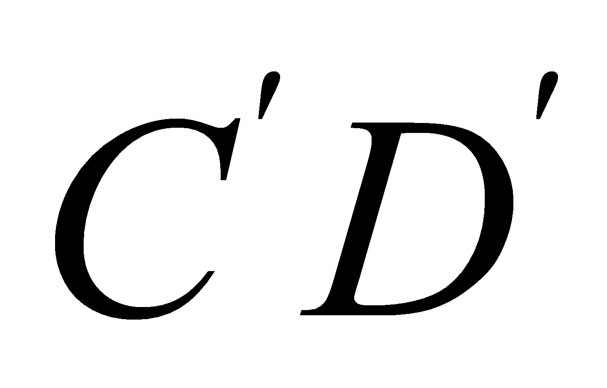
，则点的对应点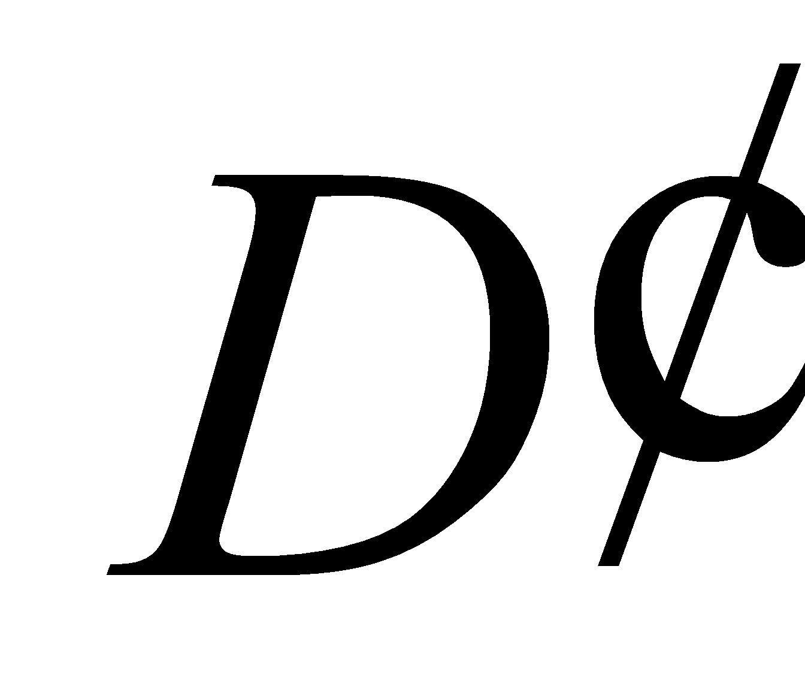
所表示的数为 ；线段 ；
；(3)在数轴上是否存在点经过上述操作后，位置不变，若存在，请求出点表示的数m的值；若不存在，请说明理由。
19．如图，已知数轴上的点表示的数为6，是数轴上一点，且 ．动点从点出发，以每秒6个单位长度的速度沿数轴向左匀速运动，设运动时间为
．动点从点出发，以每秒6个单位长度的速度沿数轴向左匀速运动，设运动时间为 秒．
秒．

(1)写出点表示的数__________，点表示的数__________（用含的代数式表示）；
(2)动点 从点出发，以每秒4个单位长度的速度沿数轴向左匀速运动，若点、同时出发，点运动几秒时追上点，并求出此时表示的数；
从点出发，以每秒4个单位长度的速度沿数轴向左匀速运动，若点、同时出发，点运动几秒时追上点，并求出此时表示的数；
(3)若为的中点，为的中点．点在运动的过程中，线段的长度是否发生变化？若变化，请说明理由；若不变，请你画出图形，请求出线段的长．
20．如图，1个单位长度表示，一个点从数轴上的原点开始，先向左移动到达A点，再向左移动 到达B点，然后向右移动
到达B点，然后向右移动 到达C点．
到达C点．
(1)请你直接写出A、B、C三点所表示的数，点A表示的数为 ，点B表示的数为 ，点C表示的数为 ；
(2)若动点P、Q分别从B、C两点同时向左移动，点P、Q的速度分别为每秒和每秒 ，设移动时间为t
，设移动时间为t 秒；
秒；
① 当
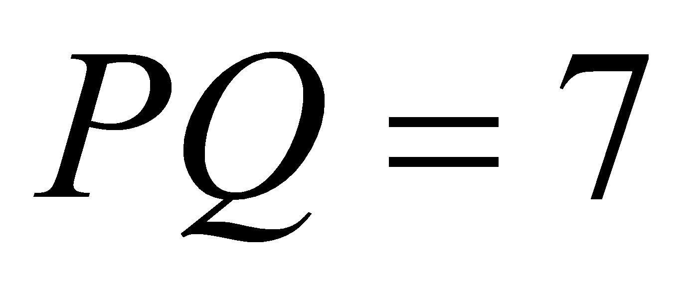
时，求t的值；② 运动过程中，点M到P、Q两点的距离始终保持相等，试探究 的值是否会随着t的变化而改变？请说明理由．
的值是否会随着t的变化而改变？请说明理由．
21．如图：在数轴上，点A，B，C分别表示
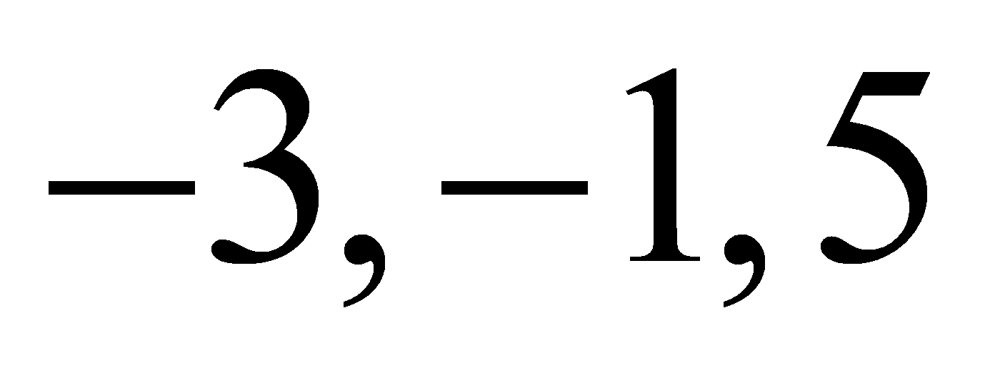
．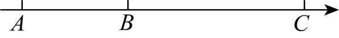
(1) ；
；
(2)若将数轴折叠，使得A点与C点重合，则点B与数________表示的点重合；
(3)点A，B，C开始在数轴上运动，若点A以每秒2个单位长度的速度向左运动，同时，点B和点C分别以每秒1个单位长度和3个单位长度的速度向右运动，假设t秒钟过后，
①请问：的值是否随着时间t的变化而改变？若变化，请说明理由；若不变，请求其值．
②探究:若点A，C向右运动，点B向左运动，速度保持不变， 的值是否随着时间t的变化而改变？若变化，请说明理由；若不变，请求其值．
的值是否随着时间t的变化而改变？若变化，请说明理由；若不变，请求其值．
考点04 新定义问题
22．阅读理解，完成下列各题：
定义：已知、、为数轴上任意三点，若点到点的距离是它到点的距离的3倍，则称点是 的3倍点．例如：如图1，点是的3倍点，点不是的3倍点，但点是
的3倍点．例如：如图1，点是的3倍点，点不是的3倍点，但点是 的3倍点，根据这个定义解决下面问题：
的3倍点，根据这个定义解决下面问题：
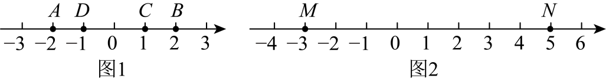
(1)在图1中，点______
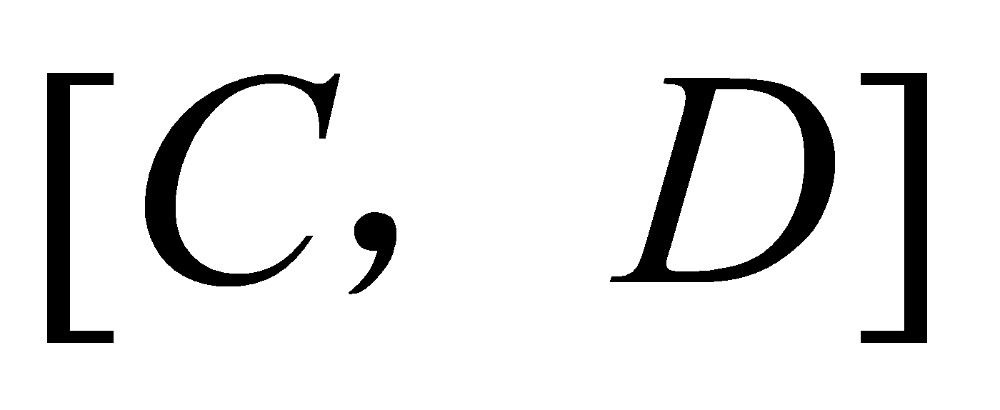
的3倍点（填写“是”或“不是”）；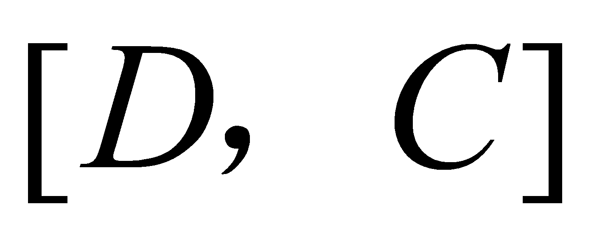
的3倍点是点______（填写或或或）；(2)如图2，、为数轴上两点，点表示的数是，点表示的数是5，若点 是
是 的3倍点，则点表示的数是______；
的3倍点，则点表示的数是______；
(3)若、为数轴上两点，点在点的左侧，
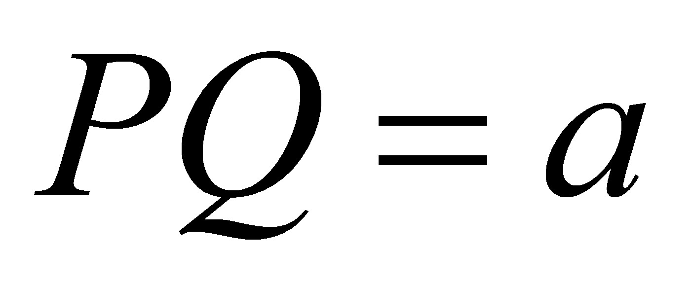
，一动点 从点出发，以每秒3个单位长度的速度沿数轴向右运动，设运动时间为秒，求当为何值时，点恰好是和两点的3倍点？（用含的代数式表示）．
从点出发，以每秒3个单位长度的速度沿数轴向右运动，设运动时间为秒，求当为何值时，点恰好是和两点的3倍点？（用含的代数式表示）．23．阅读理解：
若、、为数轴上三个点，点到的距离是点到点距离的2倍，我们就称点是[，]的赞点．
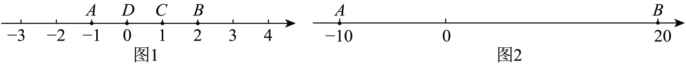
(1)如图1，点表示的数为，点表示的数为，表示的点到点的距离是，到点的距离是，那么点是[，]的赞点；又如表示 的点到点的距离是，到点的距离是，那么点_______[，]的赞点，但点_______[，]的赞点；（横线上填写“是”或“不是”）
的点到点的距离是，到点的距离是，那么点_______[，]的赞点，但点_______[，]的赞点；（横线上填写“是”或“不是”）
(2)若、为数轴上两点，点所表示的数是，点所表示的数是，则数_______所表示的点是[，]的赞点；
(3)如图2，、为数轴上两点，点所表示的数为 ，点所表示的数是
，点所表示的数是 ．现在有一辆电动小汽车从点B出发前往点，以个单位每秒的速度向左运动，到达点停止．当经过_________秒时，、和中恰有一个点是其中两个点的赞点？
．现在有一辆电动小汽车从点B出发前往点，以个单位每秒的速度向左运动，到达点停止．当经过_________秒时，、和中恰有一个点是其中两个点的赞点？
24．定义：若，，C为数轴上三点，若点到点的距离是点到点B的距离倍，我们就称点是【，B】的美好点．
例如：如图，点表示的数为，点表示的数为．表示的点到点的距离是，到点的距离是，那么点是【，】的美好点；又如，表示的点到点的距离是，到点的距离是，那么点D就不是【，】的美好点，但点是【，】的美好点．

如图2，，为数轴上两点，点所表示的数为 ，点所表示的数为
，点所表示的数为
(1)点， ，
， 表示的数分别是，
表示的数分别是， ，
， ，其中是【，】美好点的是_；写出【，】美好点所表示的数是_．
，其中是【，】美好点的是_；写出【，】美好点所表示的数是_．
(2)现有一只电子蚂蚁从点开始出发，以个单位每秒的速度向左运动．当为何值时，，和中恰有一个点为其余两点的美好点？
25．已知点P，A，B是数轴上的三个点．若点P到原点的距离等于点A，B到原点距离之和的一半，则称点P为点A，B的“关联点”．
(1)已知点A在数轴上表示的数是1，点B在数轴上表示的数是，点 ，
， ，
， ，
，
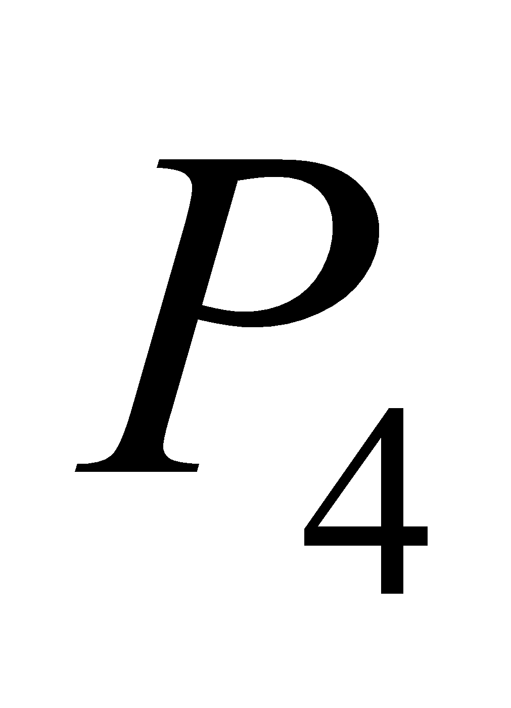
在数轴上表示的数分别是，，0，2．其中是点A，B的“关联点”的是____________；(2)已知点A在数轴上表示的数是3，点B在数轴上表示的数是b，点P为点A，B的“关联点”，且点P到原点的距离为5，求b的值；
(3)已知点A在数轴上表示的数是 ，将点A沿数轴正方向移动4个单位长度，得到点B．若点P与点B之间的距离表示为，点P与点A之间的距离表示为，当点P为点A，B的“关联点”时，直接写出
，将点A沿数轴正方向移动4个单位长度，得到点B．若点P与点B之间的距离表示为，点P与点A之间的距离表示为，当点P为点A，B的“关联点”时，直接写出 的值．
的值．